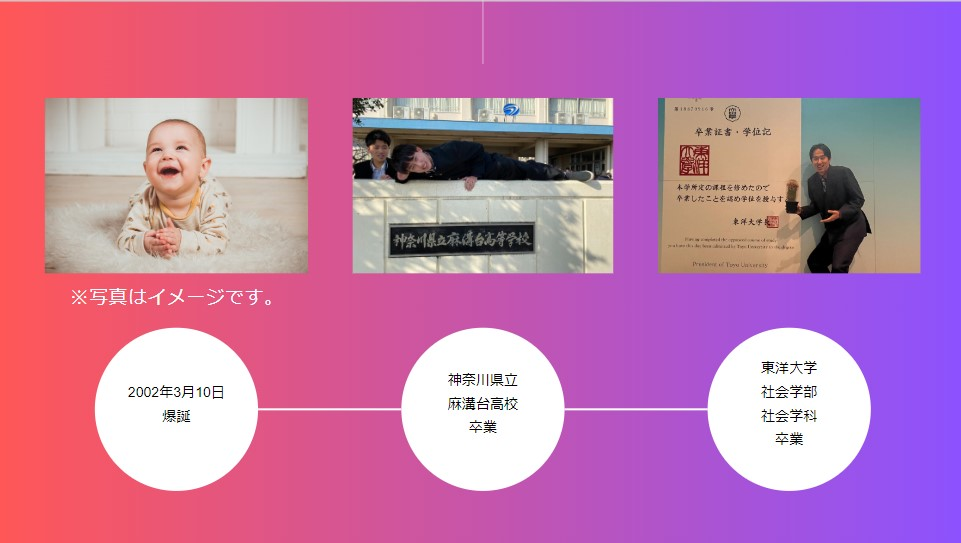
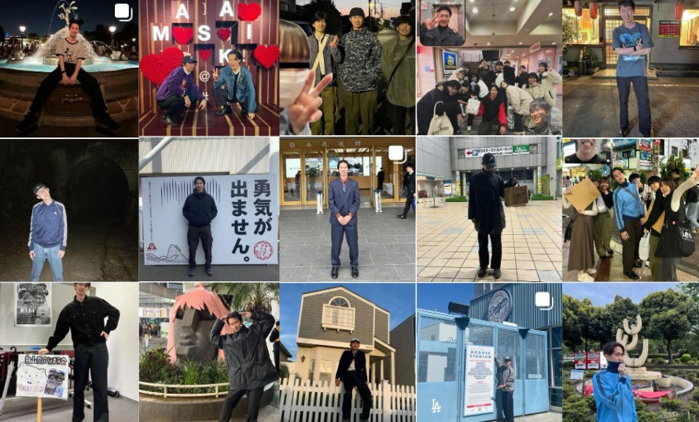

History Of Kanda

2002年3月10日生まれ
2020年3月 神奈川県立麻溝台高等学校卒業
2024年3月 東洋大学 社会学部社会学科卒業
2024年4月 株式会社フロンティアインターナショナル入社
趣味は何？

ファッション
服が好きすぎて、よく1人でファッションショーをしています。
古着が基本的に好き。好きなブランドはPalace sketboardです。
散歩（町田限定）
神田という人間は町田が生みました。それくらいに言い切れるほど、思い出のある街です。
社会人になった今でも、休日に町田で遊んでいます。
町田には多くの古着屋があり、小田急線町田駅付近には古着屋が多く集まっているスペースがあります。